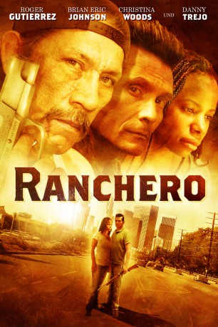

#2560 Ranchero
 
 IMDB-Wertung: 6.2 / 10
IMDB-Wertung: 6.2 / 10  Metascore: 0
Metascore: 0 
Nach dem Tod seiner Eltern beschließt der junge Rinderfarmer Jesse, das Farmerleben zu beenden und nach LA zu ziehen. Sein alter Freund Tom kann ihm eine Wohnung in seiner Nähe besorgen und Jesses Abenteuer scheint nichts mehr im Weg zu stehen. Doch schnell werden Jesse die Augen geöffnet. Drogen, Waffen und Prostitution scheinen allgegenwertig zu sein. Nachdem sich Jesse auch noch ausgerechnet in das Mädchen des Zuhälters und Gangsterbosses Capone verliebt muss er ein paar sehr gefährliche Entscheidungen treffen. Eine lebensbedrohliche Angelegenheit.
Jahr: 2008
Dauer: 95 Minuten
FSK: 16
Land: USA Studio: Indican PicturesTonspuren: DTS - ,
Untertitel:
Auflösung: 1080p (1920x1080) Größe: 5672 MB
Genre: Krimi, Drama
Regisseur: Richard Kaponas
Drehbuch: Brian Eric Johnson
Soundtrack: John Campbell, Don DiLego
Darsteller:
- Roger Gutierrez als Jesse Torres
- Brian Eric Johnson als Tom McCoy
- Christina Woods als Lil' Bit
 Danny Trejo als Capone
Danny Trejo als Capone- Ruth Livier als Carmen
- Blake Kushi als Apartment Manager
- Dave Silva als Orange Peddler
- Nicole Wordes als Receptionist
- Anthony Montes als Sign Acrobat
- Elisa Dyann als Girl in Breakroom
- Jade Gordon als Claudia
- Rodger Hoopman als Mr. McCoy
- Brandon Brown als Young Thug
- Baldwin C. Sykes als Homeless Man
- Carmen Whitaker als Denise
- Nate C. Williams als Drug Dealer #1
- Jeff Hampton als Drug Dealer #2
- Tatiana Guevara als Hopscotch Girl
- Jose Reynosa als Grocery Manager
- Ramon Ayala als Mr. Torres
- Elias Chairez III als Ranch Worker #1
- Ricardo Villalpando als Ranch Worker #2
- Martin Carrillo als Ranch Worker #3
- Hunter Hansen als Young Tom
- Jesse Freeman als Skateboarder
- Robert Botteri als Biker
- Gary Eddington als Dope Man
- Poli als Barber
- Maleri Mitchell als Girl in Bar
- Scott Lurie als Art Gallery Patron
- Gary Estrada als Cleaning Man
- David Haugland als Seth Montgomery , uncredited
- David Lee Hefner als Couple , uncredited
Datei: X:\2008(N-Z)\Ranchero (2008, FSK16, 1920x1080).mkv seit 23.11.2015
Festplatte: HD 2008(G-Z)-2009(A-F)
 Es gibt insgesamt 91 Filme in der Gruppe '2008(N-Z)'
Es gibt insgesamt 91 Filme in der Gruppe '2008(N-Z)'